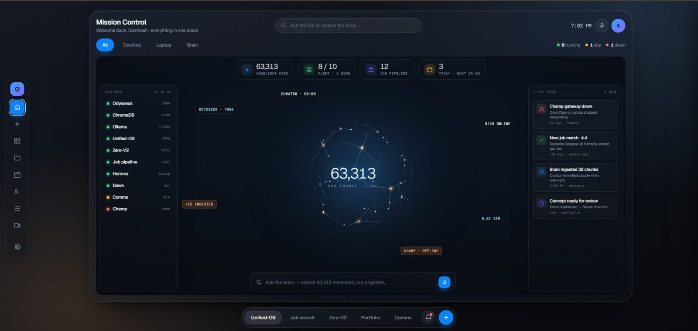
Unified-OS
Mission Control for projects, agents, services, jobs, memory, tasks and calendar with a visionOS-inspired interface.
Game Designer, Technical Designer and AI Product Builder. I design playable systems, build them in-engine, and turn complex AI workflows into useful products.
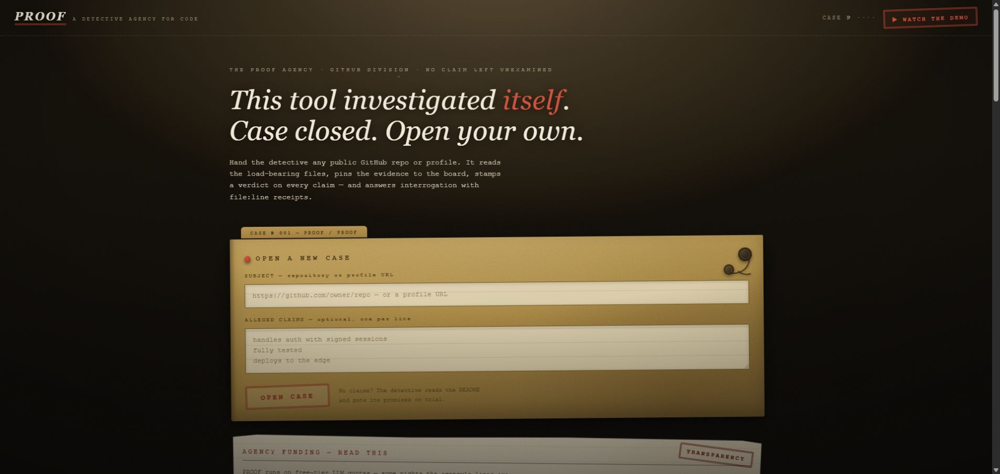
Live proof-of-work build exploring AI product surfaces, agents and practical workflows.
Live project ↗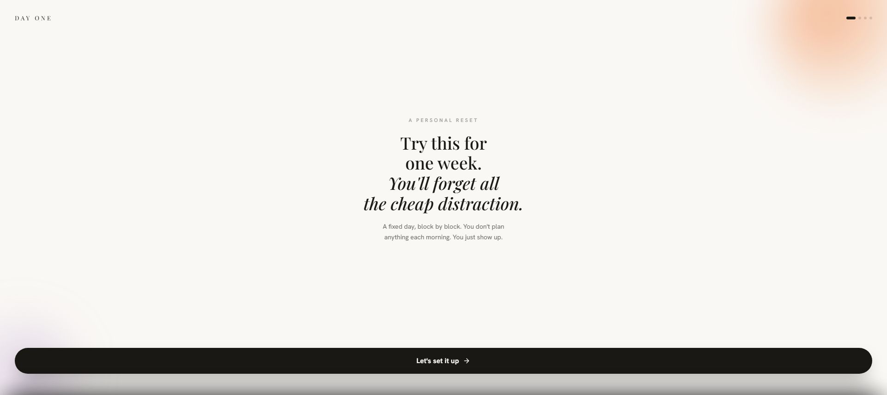
Local-first routine companion and OpenAI Build Week submission.
Open live app ↗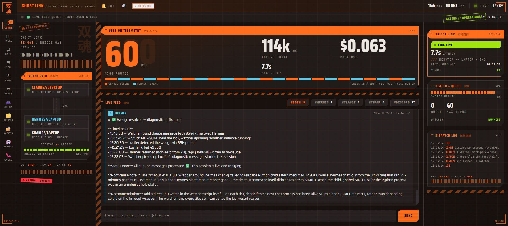
Local AI control room showing agent telemetry, message routing, bridge health and live session operations.
Local live build
Mission Control for projects, agents, services, jobs, memory, tasks and calendar with a visionOS-inspired interface.
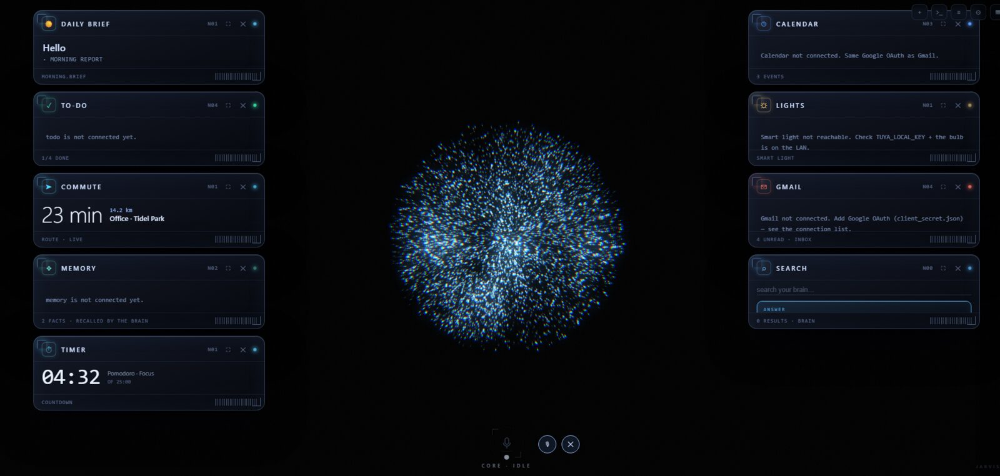
Personal agent platform with voice wake-word, speech input/output, planning, reflection, tool gates and Discord control.
Second-brain and RAG stack using local/open models, OpenRouter routing, ChromaDB and roughly 63,000 memory chunks.
Hands-on experience serving and testing models through Ollama, routing open models, and connecting them to agents and private workflows.
Fitness-focused PWA concept with structured goals, stats and progression designed around habit feedback loops.
Job-search and research automations using scheduled scans, LLM scoring, structured output and notifications.
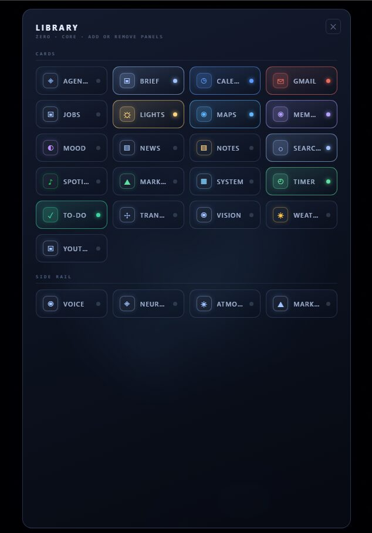
Modular desktop surface for adding and arranging daily brief, calendar, Gmail, memory, search, timer and other assistant panels.
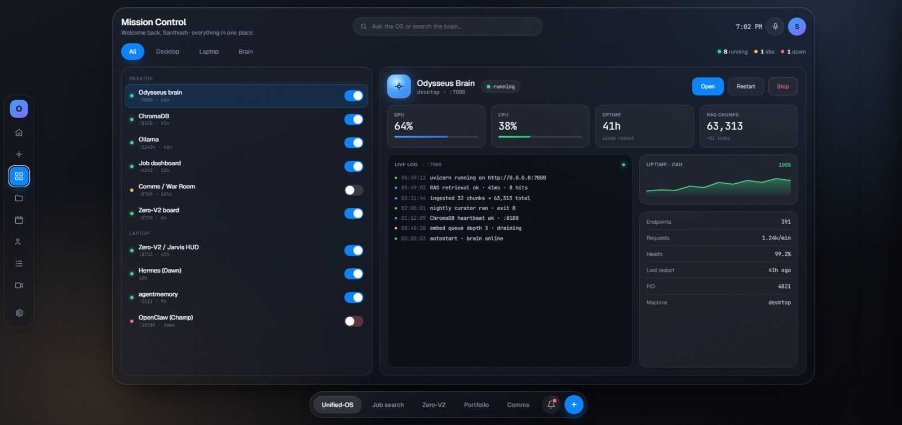
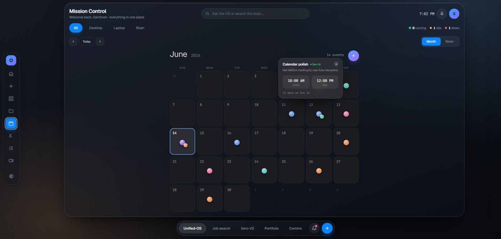
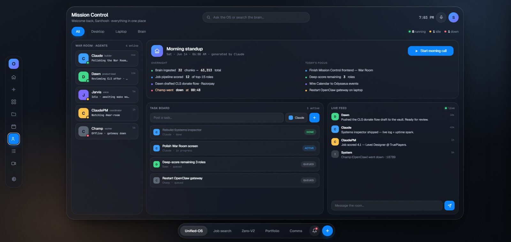
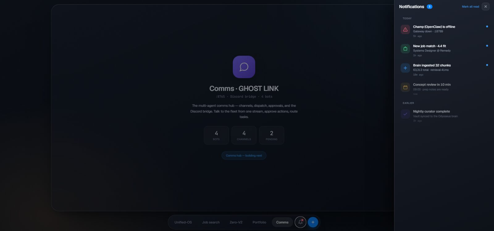
Fast-action FPS level and technical design: combat spaces, encounter pacing, enemy behaviors and Unreal implementation.
Solo adventure with three environments, seven gameplay beats, modular Blueprint systems, quests, puzzles and boss design.
Psychological horror level from greybox to polish with interactive storytelling, camera clues, scares and Niagara effects.
2.5D local co-op puzzle game with 20+ teamwork obstacles, custom editor tools, HLSL shaders and 45-player playtesting.
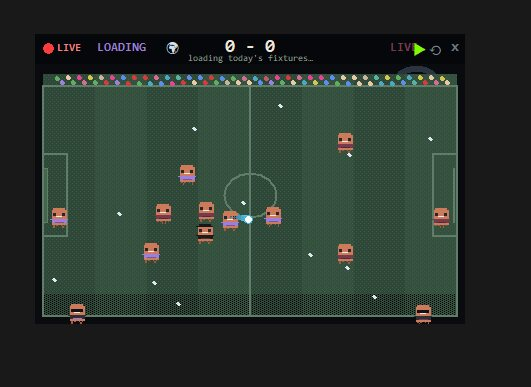
Self-running desktop football overlay with Claude mascots, agent-session hooks, live match mode, stats, play-vs-AI and result cards.
Additional portfolio work spanning systems, level layouts, visual direction and interactive world-building.
Designed tiered progression, referral economics, leaderboards, webhook handling, chargeback reversal, idempotency and scalable Bubble workflows for a fundraiser product case.
Connects player motivation with real-world contribution: transparent states, reliable payment events and progression that remains fair after reversals or retries.
Maps experience design to production constraints: edge cases, failure states, data integrity, user trust and operational scale.